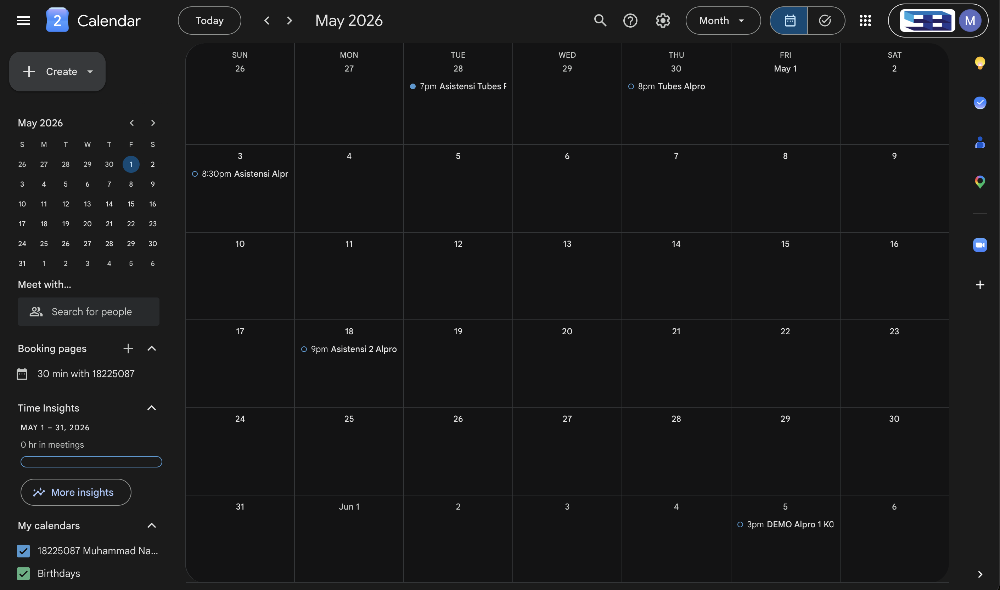
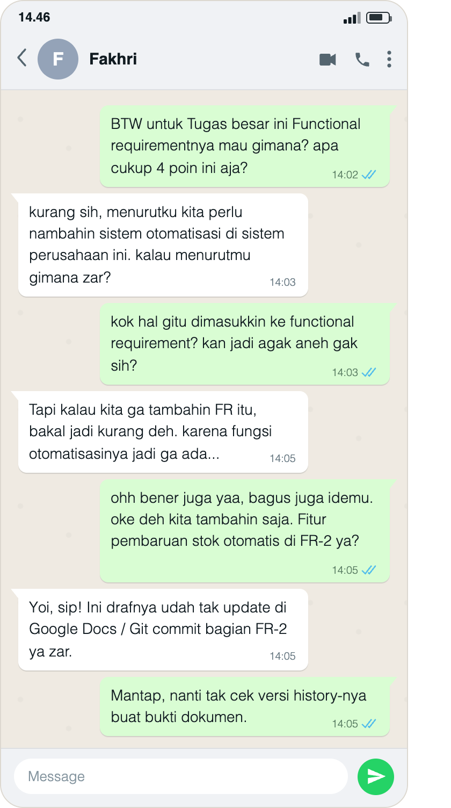
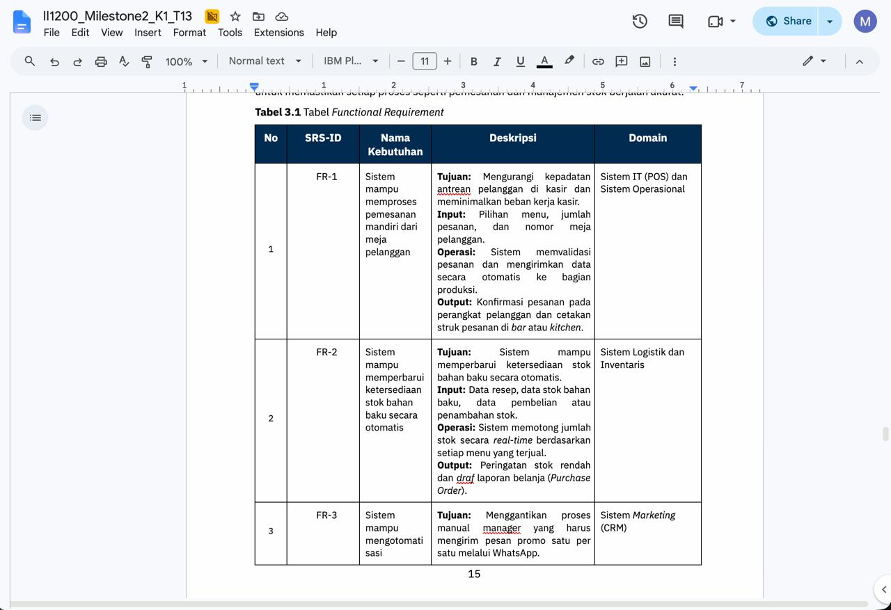

Character Map
Kompetensi target
Membedakan person, personality, dan character serta memilih objective, repertoire, dan language yang sesuai.
Evidence wajib
- Lima character dari sedikitnya tiga domain kehidupan.
- Objective, responsibility, repertoire, dan risiko tiap character.
- Satu contoh perubahan language ketika character berubah.
- Artefak proses diskusi dan hasil tindak lanjut, dengan penjelasan bagian yang dapat dilihat pada setiap lampiran.
Buka contoh fiktif Minggu 1 untuk melihat tingkat kekonkretan evidence dan analisis. Jangan menyalin contoh sebagai evidence pribadi.
Konteks performance
Setting: Saya berdiskusi tatap muka dan melalui pesan singkat dengan Fakhri tentang functional requirement pada bagian tugas besar yang membahas penambahan sistem di perusahaan. Saya juga berbicara melalui telepon dengan mama tentang kesulitan membagi waktu antara kegiatan dan tugas kuliah. Kedua percakapan merupakan pengalaman yang berbeda. Tanggal dan tempat spesifiknya tidak saya tambahkan karena belum tercantum secara lengkap pada lampiran.
Persons dan relationship: Fakhri adalah teman satu kelompok. Dalam diskusi, saya berperan sebagai anggota kelompok yang ikut menilai dan menentukan isi tugas bersama. Dalam percakapan dengan mama, saya berperan sebagai anak yang menyampaikan kesulitan dan menerima dukungan. Hubungan dengan Fakhri relatif setara, sedangkan hubungan dengan mama bersifat keluarga dan personal.
Objective dan initial state: Dalam diskusi kelompok, saya ingin menentukan apakah empat poin functional requirement yang dibahas sudah cukup. Ketika Fakhri mengusulkan tambahan otomatisasi, saya awalnya kurang setuju dan mempertanyakan mengapa fungsi tersebut dimasukkan. Dalam percakapan keluarga, saya sedang merasa kesulitan membagi waktu karena mengikuti banyak kegiatan dan memiliki banyak tugas kuliah. Saya menyampaikan keadaan tersebut kepada mama agar kesulitan saya diketahui.
Evidence
Person, personality, dan character dalam pengalaman saya
Person adalah pribadi yang utuh, dengan pengalaman, kebutuhan, dan nilai. Saya memiliki tanggung jawab akademik sekaligus kebutuhan akan dukungan ketika kewalahan. Fakhri juga perlu didengarkan sebagai orang yang memiliki pemikiran tentang tugas bersama, bukan sekadar orang yang berbeda pendapat dengan saya.
Personality adalah kecenderungan dalam berpikir, merasa, dan bertindak. Hambatan yang saya kenali adalah kesulitan menyampaikan rasa kewalahan. Dalam percakapan dengan mama, saya berusaha menyampaikan kesulitan itu secara terbuka. Dalam diskusi dengan Fakhri, saya sempat merasa penambahan functional requirement kurang sesuai, tetapi tetap dapat mengubah penilaian setelah mempertimbangkan alasannya. Satu respons awal tidak cukup untuk menetapkan kepribadian saya sebagai orang yang selalu menolak masukan.
Character adalah peran dan tanggung jawab komunikasi yang saya jalankan sesuai situasi. Sebagai anggota kelompok, saya perlu menilai usulan sekaligus mendengarkan alasan teman. Sebagai anak, saya perlu menyampaikan keadaan diri dengan jujur dan menerima dukungan. Pribadinya tetap sama, tetapi tujuan dan tuntutan bahasanya berbeda.
Peta lima character
| Domain dan character | Person dan relationship | Objective dan responsibility | Repertoire dan language | Risiko |
|---|---|---|---|---|
| Diri sendiri — pembelajar yang reflektif | Diri sendiri ketika menghadapi kesulitan atau meninjau keputusan | Mengenali keterbatasan dan menjadikan kesalahan atau masukan sebagai bahan perbaikan | Merefleksikan respons, mengakui kekurangan, dan menentukan langkah perbaikan | Sulit berkembang jika saya mempertahankan penilaian awal tanpa memeriksa alasan |
| Keluarga — anak yang bertanggung jawab | Mama sebagai orang tua yang memberi dukungan | Menyampaikan kesulitan dengan jujur, menjaga keterbukaan, dan menindaklanjuti saran yang sesuai | Bercerita dengan bahasa personal, mendengarkan saran, serta mengucapkan terima kasih | Mama tidak mengetahui kebutuhan saya apabila saya menyembunyikan rasa kewalahan |
| Akademik — anggota kelompok yang terbuka | Fakhri dan teman satu kelompok | Menilai isi tugas bersama dan mempertimbangkan usulan berdasarkan alasannya | Bertanya, menyampaikan keraguan, mendengarkan penjelasan, dan menyepakati keputusan | Usulan yang berguna dapat terlewat jika saya menolaknya hanya karena terasa aneh |
| Komunitas — anggota HR IIT | Anggota kepanitiaan IIT | Menilai performa anggota dan melakukan follow-up terhadap data yang belum diisi | Menjelaskan tujuan evaluasi, mengingatkan pengisian data, dan mendengarkan kendala | Follow-up dapat terasa seperti penagihan jika tujuan dan kendala anggota tidak dibicarakan |
| Publik — presenter yang terbuka | Audiens presentasi atau orang yang belum dekat dengan saya | Menjelaskan materi dengan jelas dan memberi ruang bagi audiens untuk merespons | Menyampaikan informasi secara terstruktur dan membuka kesempatan bertanya | Tidak adanya pertanyaan dapat keliru dianggap sebagai tanda bahwa audiens sudah memahami |
Peta ini merangkum tuntutan lima peran dalam sedikitnya tiga domain kehidupan. Episode yang dianalisis secara konkret pada halaman ini adalah peran anggota kelompok dan anak; tabel tidak menyatakan bahwa seluruh peran telah diuji dalam kedua percakapan tersebut.
Analisis risiko tiap character
Analisis berikut membedakan tindakan yang saya laporkan pada dua episode dari rencana latihan untuk peran lainnya. Lampiran mendukung bagian tertentu dari pengalaman tersebut, bukan seluruh proses atau dampak jangka panjangnya.
| Character | Risiko dan pemicu | Dampak | Mitigasi dan statusnya | Indikator yang dapat diperiksa |
|---|---|---|---|---|
| Pembelajar yang reflektif | Menganggap penilaian awal pasti benar ketika mendapat pendapat berbeda | Saya melewatkan alasan yang dapat memperbaiki keputusan | Pada episode Fakhri, saya mempertimbangkan penjelasannya dan mengubah keputusan | Perbedaan antara respons awal, alasan yang diterima, dan persetujuan pada lampiran percakapan |
| Anak yang bertanggung jawab | Menyembunyikan kesulitan ketika kegiatan dan tugas terasa terlalu banyak | Mama tidak mengetahui kondisi saya dan kesempatan memperoleh dukungan berkurang | Saya menyampaikan kesulitan kepada mama dan membuat jadwal di Google Calendar setelah menerima sarannya | Catatan respons mama dan tautan screenshot jadwal Google Calendar pada bagian evidence |
| Anggota kelompok yang terbuka | Menolak tambahan fungsi karena terasa aneh tanpa mendengar penjelasan | Kebutuhan yang dianggap penting oleh anggota lain tidak ikut dipertimbangkan; diskusi dapat terhenti | Saya mendengarkan alasan Fakhri dan menyetujui penambahan requirement; hasil tugas memuat pembaruan stok otomatis pada FR-2 | Lampiran percakapan dan halaman 15 dokumen tugas besar; riwayat penyuntingan belum dilampirkan |
| Anggota HR IIT | Mengingatkan pengisian data tanpa menjelaskan tujuan atau menanyakan kendala | Anggota kurang memahami manfaat evaluasi dan dapat menghindari komunikasi | Rencana latihan: menjelaskan kegunaan data dan mendengarkan kendala sebelum menyepakati tindak lanjut | Respons anggota serta langkah pengisian yang benar-benar dilakukan |
| Presenter yang terbuka | Menganggap audiens memahami materi karena tidak bertanya | Salah paham tidak terdeteksi dan tujuan penjelasan belum tercapai | Rencana latihan: meminta audiens merangkum gagasan dengan kata-katanya sendiri, lalu memperjelas bagian yang keliru | Jawaban audiens sebelum dan sesudah klarifikasi bila dilakukan |
Nilai, kekuatan, dan hambatan komunikasi
Nilai yang ingin saya jaga adalah kejujuran dan keadilan. Kejujuran terlihat ketika saya menyampaikan kesulitan kepada mama. Keadilan dalam diskusi kelompok berarti memberi ruang bagi Fakhri untuk menjelaskan pendapatnya dan mempertimbangkan alasan tersebut sebelum menentukan keputusan bersama.
Kekuatan yang terlihat pada kedua episode adalah kesediaan menerima masukan. Saya menerima usulan Fakhri dan saran mama. Hambatan yang perlu saya perhatikan adalah kecenderungan memberi respons negatif sebelum memahami suatu usulan, serta kesulitan menyampaikan rasa kewalahan. Kalimat saya yang mempertanyakan tambahan sebagai sesuatu yang “aneh” dapat terasa menolak; penjelasan Fakhri membantu saya mengubah respons tersebut.
Episode 1 — Diskusi functional requirement dengan Fakhri
Saya dan Fakhri membahas apakah empat poin functional requirement pada bagian tugas besar sudah cukup. Fakhri mengusulkan penambahan otomatisasi. Otomatisasi yang dimaksud adalah fitur pembaruan stok otomatis pada draf FR-2.
Berikut dialog yang saya sajikan sesuai lampiran percakapan bersama Fakhri:
Izar: “BTW untuk Tugas besar ini Functional requirementnya mau gimana? apa cukup 4 poin ini aja?”
Fakhri: “kurang sih, menurutku kita perlu nambahin sistem otomatisasi di sistem perusahaan ini. kalau menurutmu gimana zar?”
Izar: “kok hal gitu dimasukkin ke functional requirement? kan jadi agak aneh gak sih?”
Fakhri: “Tapi kalau kita ga tambahin FR itu, bakal jadi kurang deh. karena fungsi otomatisasinya jadi ga ada…”
Izar: “ohh bener juga yaa, bagus juga idemu. oke deh kita tambahin saja. Fitur pembaruan stok otomatis di FR-2 ya?”
Fakhri: “Yoi, sip! Ini drafnya udah tak update di Google Docs / Git commit bagian FR-2 ya zar.”
Izar: “Mantap, nanti tak cek versi history-nya buat bukti dokumen.”
Respons awal saya menunjukkan keraguan terhadap penambahan tersebut. Fakhri kemudian menjelaskan bahwa fungsi otomatisasi belum tercakup apabila functional requirement itu tidak ditambahkan. Setelah mempertimbangkan penjelasannya, saya mengakui bahwa usulannya masuk akal dan menyatakan persetujuan.
Agreement dan action: Kami menyepakati penambahan requirement pembaruan stok otomatis ke dalam dokumen tugas besar. Dalam lampiran percakapan, Fakhri menyatakan bahwa drafnya sudah diperbarui; pada lampiran hasil tugas, requirement itu tercantum sebagai FR-2. Tindakan yang saya laporkan adalah penambahan requirement ke dokumen, bukan pembangunan atau pengujian fitur pada aplikasi.
Episode 2 — Percakapan dengan mama
Saya menyampaikan bahwa saya kesulitan membagi waktu karena mengikuti banyak kegiatan dan memiliki banyak tugas kuliah. Mama memberi dukungan, menanyakan penyebab kesulitan, lalu menyarankan agar saya membuat jadwal.
Izar: “mama, aku ngerasa susah banget bagi waktu di kuliah sekarang..”
Mama: “gapapa zar semangat, mama percaya kamu pasti bisa. emangnya kesulitanmu kenapa?”
Izar: “aku ikut banyak kegiatan sama tugas kuliah yang banyak ma”
Mama: “Owalah, mama tau pasti berat bagimu zar. tapi yang udah ada sekarang pasti yang terbaik untuk masa depanmu nanti. coba kamu buat jadwal kegiatan deh biar bisa lebih management waktu dengan baik”
Izar: “okei ma, aku bakal coba ituu. makasih mamaku sayang”
Mama: “iya izar sayangku”
Response dan action: Mama menanggapi kesulitan saya dengan dukungan dan saran yang dapat dicoba. Saya menindaklanjutinya dengan membuat jadwal kegiatan di Google Calendar.
Bukti tindak lanjut — jadwal Google Calendar

Buka screenshot jadwal Google Calendar di Google Drive
Saya melampirkan gambar ini untuk mendukung laporan bahwa saya membuat jadwal setelah menerima saran mama. Gambar memperlihatkan entri terkait asistensi dan tugas besar beserta waktu yang dijadwalkan. Hubungannya dengan percakapan mama berasal dari pengalaman yang saya ceritakan; gambar tidak menunjukkan kapan entri dibuat atau apakah seluruh kegiatan sudah terlaksana.
Bukti proses — percakapan bersama Fakhri

Buka screenshot bukti log chat diskusi W01-F
Lampiran percakapan memuat keraguan awal saya, alasan yang diberikan Fakhri, persetujuan saya, dan pernyataan Fakhri bahwa draf FR-2 sudah diperbarui. Nama Fakhri terlihat pada header, tetapi tanggal percakapan tidak ditampilkan. Gambar disajikan sesuai file yang saya berikan; keaslian sumber tidak ditetapkan hanya dari tampilannya. Pernyataan tentang pembaruan draf merupakan isi percakapan; gambar ini tidak menampilkan riwayat versi Google Docs atau riwayat commit Git.
Bukti hasil — functional requirement pada tugas besar

Buka screenshot halaman 15 tugas besar: Tabel 3.1, FR-2
Gambar dokumen II1200_Milestone2_K1 T13, halaman 15, memperlihatkan Tabel 3.1 — Functional Requirement. Pada baris FR-2, sistem disebut mampu memperbarui ketersediaan stok bahan baku secara otomatis. Lampiran ini menunjukkan requirement tersebut ada dalam hasil tugas, tetapi tidak memperlihatkan versi sebelum perubahan, waktu penyuntingan, atau siapa yang menyuntingnya. Gambar juga tidak menunjukkan implementasi atau pengujian perangkat lunak.
Evidence pada halaman ini terdiri dari peta lima character, dialog yang saya laporkan, serta tiga lampiran gambar yang ditampilkan langsung agar tidak bergantung pada akses Google Drive.
- Lampiran percakapan Fakhri memperlihatkan perubahan respons dan pernyataan bahwa draf telah diperbarui.
- Lampiran hasil tugas memperlihatkan requirement pembaruan stok otomatis pada FR-2.
- Lampiran Google Calendar memperlihatkan jadwal kegiatan.
Riwayat versi dokumen, perbandingan draft sebelum–sesudah, dan rekaman telepon dengan mama belum dilampirkan. Karena itu, saya tidak menyatakan seluruh kronologi perubahan atau pelaksanaan fitur sudah terverifikasi dari gambar-gambar ini.
Perubahan language dan kontras dua character
Adaptasi di dalam peran anggota kelompok: Saya berubah dari “kok hal gitu dimasukkin ke functional requirement? kan jadi agak aneh gak sih?” menjadi “ohh bener juga yaa, bagus juga idemu. oke deh kita tambahin saja”. Perubahan ini menunjukkan peralihan dari mempertanyakan usulan menjadi mengakui alasan, menghargai ide, dan menyepakati tindakan.
Perubahan ketika character berbeda: Dengan Fakhri, saya memakai istilah tugas seperti “functional requirement”, “4 poin”, dan “kita tambahin” untuk membahas keputusan bersama. Dengan mama, saya menggunakan “aku ngerasa susah banget”, “ma”, dan “makasih mamaku sayang” untuk menyampaikan keadaan diri serta merespons dukungan dengan bahasa yang personal.
| Unsur | Anggota kelompok bersama Fakhri | Anak dalam percakapan dengan mama |
|---|---|---|
| Objective | Menentukan isi functional requirement bersama | Menyampaikan kesulitan membagi waktu dan menerima dukungan |
| Repertoire | Bertanya, mempertanyakan, mendengarkan alasan, dan menyepakati usulan | Bercerita tentang keadaan diri, mendengarkan saran, dan mengucapkan terima kasih |
| Language | Bahasa santai antarteman dengan istilah teknis tugas | Bahasa personal dan akrab dalam hubungan keluarga |
| Response | Fakhri menjelaskan mengapa fungsi otomatisasi perlu ditambahkan | Mama memberi semangat dan menyarankan membuat jadwal |
| Agreement/action | Usulan pembaruan stok otomatis disepakati dan dimasukkan ke tugas besar | Saya menerima saran dan kemudian membuat jadwal di Google Calendar |
| Relationship | Saya memberi ruang pada pendapat Fakhri dan menghargai idenya | Saya menunjukkan keterbukaan dan rasa terima kasih kepada mama |
Analisis komunikasi
| Elemen | Evidence dan analisis |
|---|---|
| Person & character | Pribadi yang sama menjalankan peran anggota kelompok dan anak. Pendapat Fakhri saya pertimbangkan dalam keputusan tugas; dukungan mama saya terima dalam situasi kewalahan. |
| Objective & state | Diskusi dimulai dengan pertanyaan tentang empat poin functional requirement dan keraguan saya terhadap tambahan otomatisasi. Percakapan dengan mama dimulai dari kesulitan membagi waktu. |
| Repertoire & language | Dalam kelompok, saya bertanya dan menilai usulan dengan istilah teknis. Dalam keluarga, saya bercerita tentang kesulitan dengan bahasa personal. Lampiran percakapan Fakhri dan dialog mama yang saya laporkan menjadi dasar perbandingan bahasa. |
| Response & adaptation | Alasan Fakhri membuat saya mengubah penilaian dan menerima usulan. Saran mama saya tanggapi dengan kesediaan mencoba, lalu saya membuat jadwal. |
| Agreement/action | Lampiran percakapan memuat persetujuan dan pernyataan pembaruan draf. Hasil tugas memuat FR-2, sedangkan Google Calendar menunjukkan jadwal kegiatan. Riwayat penyuntingan dan implementasi perangkat lunak belum ditunjukkan. |
| Relationship outcome | Kalimat “bagus juga idemu” menunjukkan penghargaan atas usulan Fakhri; ucapan terima kasih dan balasan mama menunjukkan keakraban. |
Penggunaan AI
AI tidak saya gunakan dalam percakapan atau pengambilan keputusan ini. AI digunakan untuk membantu menata tulisan, memperinci analisis risiko, menyelaraskan laporan dengan lampiran, dan menempatkan gambar pada halaman. Isi percakapan dan pengalaman berasal dari keterangan serta lampiran yang saya berikan.
Feedback dan tindak lanjut
Feedback yang diterima: Fakhri menjelaskan bahwa fungsi otomatisasi belum tercakup jika requirement itu tidak ditambahkan. Mama memberi dukungan dan menyarankan pembuatan jadwal. Feedback penilaian meminta artefak proses perubahan, bukan hanya dokumen hasil akhir.
Adaptasi dan tindak lanjut yang sudah dilakukan: Saya menerima usulan Fakhri setelah mendengar alasannya dan membuat jadwal setelah menerima saran mama. Lampiran percakapan, halaman 15 tugas besar, dan Google Calendar ditampilkan langsung pada halaman ini. Lampiran percakapan memuat pernyataan pembaruan draf, tetapi riwayat penyuntingan dokumen belum tersedia pada halaman ini.
Refleksi: Penting untuk mendokumentasikan proses diskusi dan perubahan versi draf secara sistematis, bukan hanya melaporkan hasil akhir.
Next practice: Dalam diskusi tugas berikutnya, saya akan mencatat keputusan beserta riwayat perubahan dokumen (version history) secara konsisten untuk mempermudah penelusuran balik.
Self-assessment
| Dimensi | Skor 1–4 | Evidence singkat |
|---|---|---|
| Person & Character | 4 | Lima character dipetakan. Dialog menunjukkan perbedaan peran anggota kelompok dan anak. |
| Objective & State | 4 | Membedakan tujuan menilai isi tugas dari tujuan menyampaikan kesulitan diri. |
| Repertoire, Language & AI | 3 | Pilihan bahasa teknis antarteman dan bahasa personal dengan mama dijelaskan melalui dialog; batas penggunaan AI dinyatakan. |
| Response & Adaptation | 4 | Lampiran percakapan Fakhri menunjukkan perubahan respons; pembuatan jadwal menjadi tindak lanjut saran mama yang saya laporkan. |
| Agreement, Action & Relationship | 3 | Lampiran percakapan, halaman 15 FR-2, dan jadwal mendukung persetujuan serta hasil tindak lanjut; riwayat penyuntingan belum dilampirkan. |
Total: 18 / 20
Assessment dosen
Skor: — / 20
Evidence yang mendukung: —
Prioritas perbaikan: —
Keputusan: Belum dinilai / Perlu revisi / Tercapai